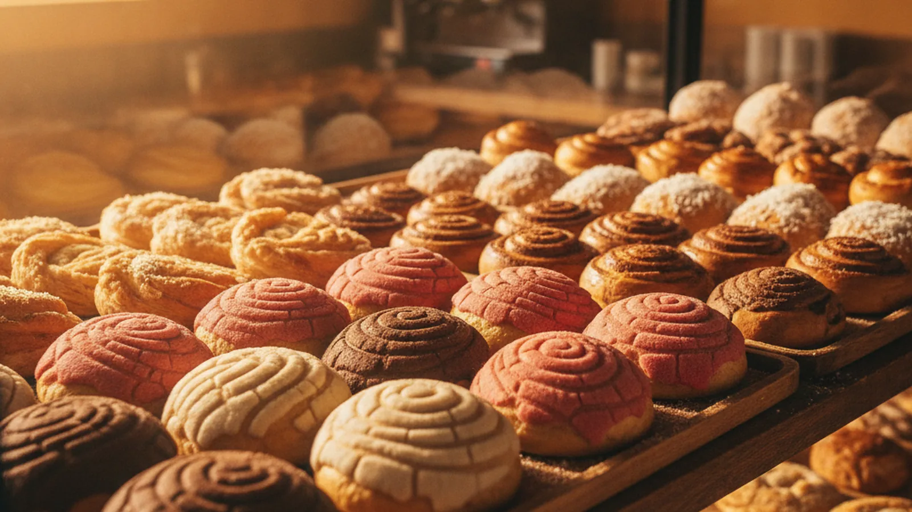
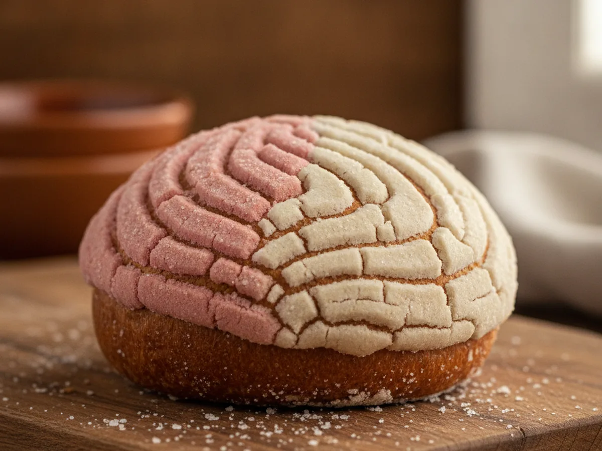
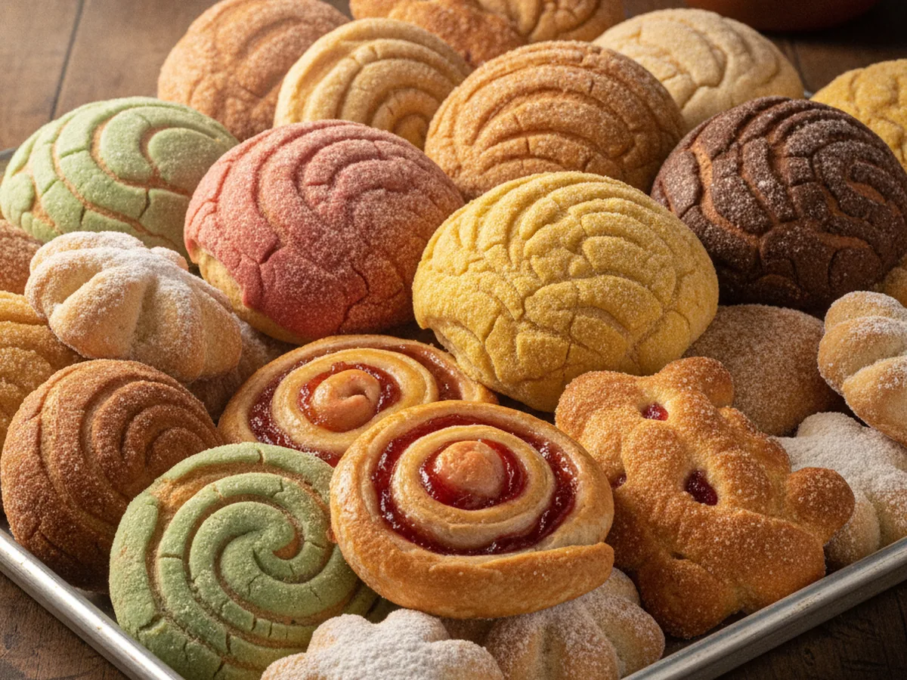
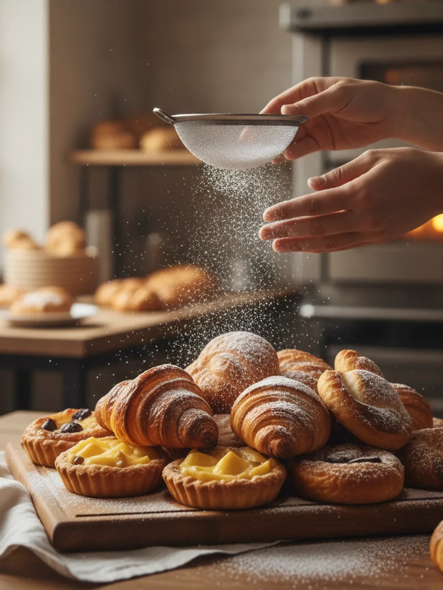

Panadería mexicana · West Valley City
Pan dulce fresh from the case, hecho a mano.
Conchas, cuernos and cakes, baked the way they have been for more than thirty years. A neighborhood panadería in West Valley City, still warm when you walk in.
- 1,009Google reviews
- 4.3★average rating
- 30+years baking

De la vitrina
From the case
Slide through what comes out of the ovens. Pan dulce is baked fresh through the day; cakes are made to order for whatever you are celebrating.
-

Conchas
The classic sweet shell: soft crumb under a crackly sugar top.
-

Pan dulce surtido
Orejas, cuernos, empanadas and puerquitos. A little of everything.
-
Pasteles · custom cakes
Birthdays, quinceañeras and weddings, decorated to order.
-

Hecho a mano
Mixed, shaped and finished by hand, the same recipes for decades.
-
The whole case
Come see the full spread. It changes as trays come out of the oven.
Nuestra historia
Thirty years of the same early mornings.
Panadería Alicia's has been baking in West Valley City for more than three decades. The ovens are lit before dawn, the dough is shaped by hand, and the pan dulce is out front while it is still warm, the way a neighborhood bakery is supposed to run.
That steadiness is what more than a thousand neighbors keep coming back for. It is the reason a birthday cake here tastes like the one from last year, and the year before that.
- Baked fresh daily
- Family recipes
- Hecho a mano
- 1,009 reviews · 4.3★
Pasteles a la orden
Order a custom cake for the big day.
Cumpleaños, quinceañeras, baptisms, weddings: tell us the date, the size and the flavor, and we make it to order. Give us a few days' notice for the detailed ones.
Prefer to talk it through? A quick call is the easiest way to plan a cake.
Vení a vernos
Come by the panadería
We are on 4800 West in West Valley City. Walk in for pan dulce, or call ahead to start a cake.
-
Find us
3550 S 4800 W
Open in Maps →
West Valley City, UT -
Call or email
-
Hours confirm
Open daily · fresh batches through the morning.
Call ahead to confirm today's hours.